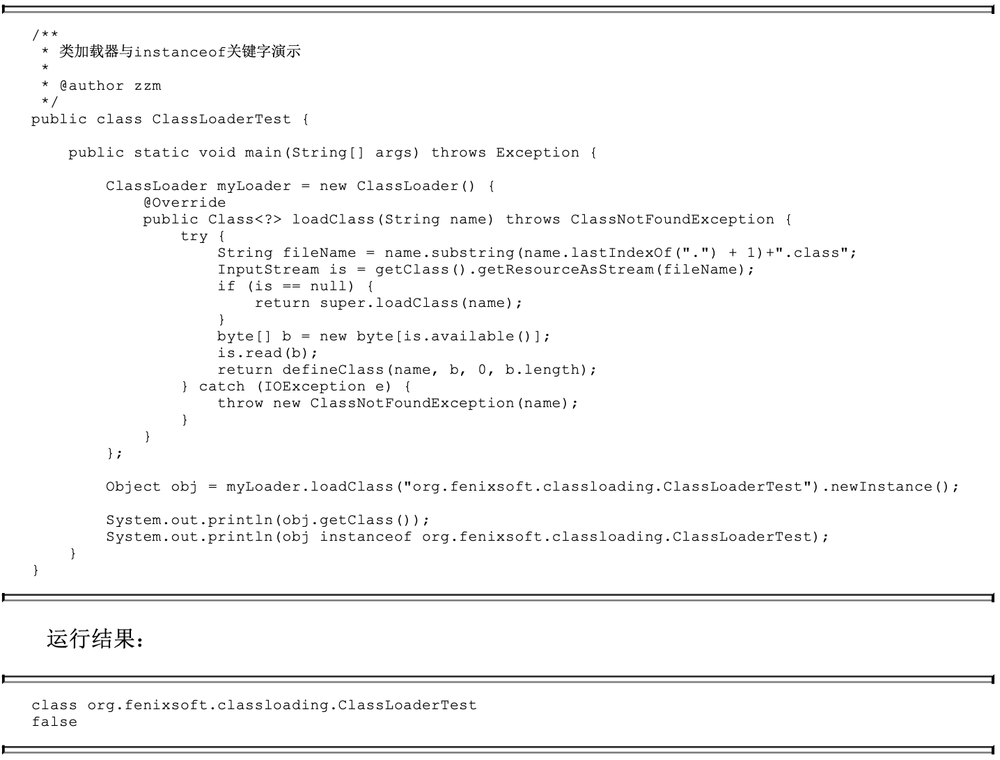

加载class
虚方法
· class的若干方法引用中有一些是不可能在运行期被更改的：static/private/构造方法/super/final。除此之外剩下的方法也就是可被继承重写的了，称 为“虚方法”
class加载流程
· 规范规定class只在被主动使用时才初始化（不是加载），且一定要先初始化父类和包含default方法的接口。可以通过给jvm添加-verbose:class启动参数 来跟踪class的加载情况
-
加载：把class的内容存到逻辑上属于堆的方法区，并在堆中实例化一个java.lang.Class对象作为引用它的入口。class不一定是.class文件，也可以来自 于网络、压缩包、动态代理动态生成……
-
验证：安全性、完整性……
-
准备：把class变量初始化为零值，final static的值存于属性表，此时被赋值
-
解析：用加载后class的实际内存地址替换字段和“非虚方法”的符号引用，规范只规定解析发生在实际使用之前
-
初始化：执行编译器生成的“类构造函数()”，即代码中的声明时赋值和静态块。jvm需保证此过程是线程安全的
· 不同的类加载器加载的相同的class被视为不相同，图中演示了这个结果，其中obj所属class来自于自定义加载器加载，它不同于jvm自己的加载器加载的class 
方法重载
· 编译器以“方法名+参数”生成方法签名，即class中可存在同名方法。注意这是编译期，和继承/运行时类型没有任何关系，试图通过入参类型区分重载方法时，声 明的啥类型就按啥类型
· 对于method(‘a’)会调用method(int x)还是method(Character x)，虽然编译器允许但这种代码没有任何意义，应该显式声明’a’的类型
虚方法调用和字段解析
· 继承关系中调用方法要求优先调用底层类的，也就是需要从实际类型开始按继承关系向上查找符合签名的方法。编译器做不到这一点，因为它无法知道实际类型， 比如：Father obj = (random() == 1) ? new Son() : new daughter();。所以由jvm在每次遇到虚方法调用指令时都执行一次方法查找：从当前对象 的实际class开始，按继承关系向上查找符合签名的方法
· 关于实例字段，在继承语义下也是当前class有就用当前的，否则按继承关系向上查找（无关类型，同名即可）然后验证访问权限。但字段与运行时类型无关，字 段查找的起始class是声明的类型。《深入理解Java虚拟机》描述的字段解析过程和虚方法差不多，而且HotSpot中实例对象也会存储父实例的非static字 段（不是指针，是拷贝存储）